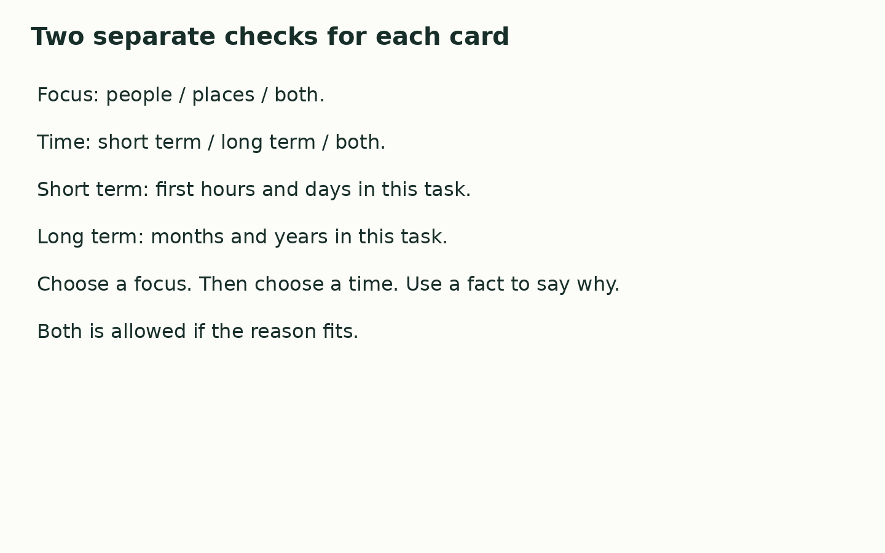

Friday 5 March 2027 | P2 | 40 minutes | Year A
Humanities · GROW · Spring 2 Week 2 · HUM-GROW-S2-W02
You may point, write, type, speak in private or direct a scribe. You may pass. Reading aloud is your choice.
On 11 March 2011, a strong earthquake happened under the sea near Japan. Part of the sea floor moved. This helped cause a tsunami, a set of large waves. The waves reached the coast of the Tohoku region. This lesson looks at some effects and the work to recover. People and places were not all affected in the same way.
| Card | Fact |
|---|---|
| E1 Homes and shelter | Some homes were damaged. People used shared shelters in the first days. |
| E2 Roads and travel | Some roads and rail lines were damaged. This made travel hard at first. |
| E3 Water and power | At first, power and water supplies stopped in some areas. |
| E4 Rebuilding | Homes and transport routes were rebuilt over months and years. |
| E5 Homes for a time | Some people used temporary homes. Work to build new homes went on for years. |
| E6 Sea walls | Some places on the coast rebuilt sea walls over years. |

In your book, make a record for cards E1 to E4. For each card, choose people, places or both. Then choose short term, long term or both. Use the card to give one reason. Finish with two linked sentences about the Japan case.
One effect was ____. It affected ____ because ____. This was ____ term because ____.
Use the agreed quiet signal for a pause. Stay with the adult in the usual place. Rejoin with one card check. A neutral shape task is ready.